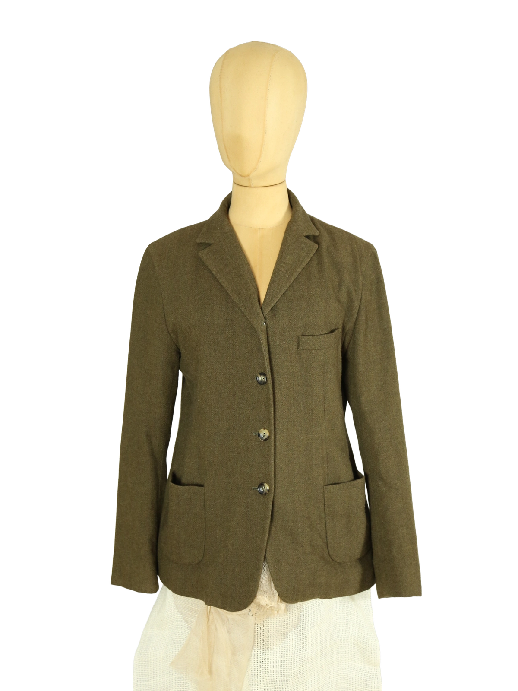

Jil Sander
70.00 €
Aus dem kuratierten Archiv von Disorder119. Dieser Jil Sander Blazer zeigt die ruhige, präzise Ästhetik der Marke in einer reduzierten, zeitlosen Ausführung. Der klassische Einreiher ist klar geschnitten, mit schmalem Revers und einer ausgewogenen Silhouette, die Struktur verleiht, ohne streng zu wirken. Das Material besitzt eine matte, leicht melierte Oberfläche in einem gedämpften Olivton, der zwischen Beige und Grün changiert. Die gerade Linienführung, die dezenten Taschen und die harmonisch gesetzten Knöpfe unterstreichen den minimalistischen Charakter. Ein vielseitiges Stück, das sowohl formal als auch entspannt kombiniert werden kann. Details: Marke: Jil Sander Farbe: Olive Green Größe: 40 Passform: Klassisch, leicht tailliert Verschluss: Knopfleiste Material: Wollmischung Herstellungsland: nicht angegeben Fotografie & Passform: Das Kleidungsstück wurde auf unserer Standard-Schn
Im Archiv ansehen & in den Warenkorb →